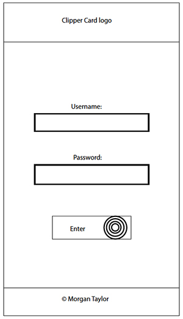
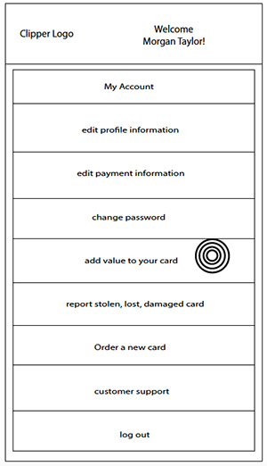
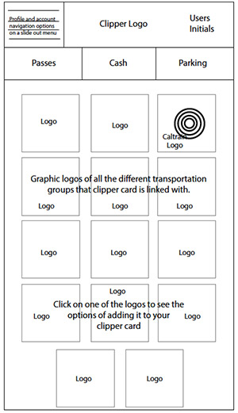

Study 5 - Clipper Card App
Objective:
Create a mobile app for Clipper Card that has more of a user-centered interface. Clipper is a company that provides cards that can store a variety of passes and cash from public transportation companies all over the bay area.
Goal:
The goal of my Clipper Card app is to give users a way to edit, manage, and view their account in a simple, easy to use, mobile app. It isn't acceptable for people to have to use the desktop website on their mobile devices.
People who commute regularly are mobile by necessity. Their mobile devices play a large role in their day to day lives. Clipper card currently gives customers the ability to purchase a pass from numerous transportation companies and store that pass on a physical card they carry. For these people who are constantly on the go why is there not an app to help them manage their account while on the go? These are people that don't have ten minutes to be standing in line at a kiosk.
Research
Persona & Storyboard
Click on a thumbnail to view the full PDF
Wireframes
Home screen:
This screen is the 2nd most important screen in the app. I only wanted one option for users, the ability to log into their account. The button on this page needs to be able to grab the users attention so they are guided to press it after they fill out the username and password inputs.
Navigation Page:
The most important screen of this app. There can't be too many options, after all this is going to be viewed on a small screen, but it needs to have enough options for a user to be able to manage and make changes on the go. Buttons need to be large enough to be clickable on a mobile device. Navigation can't look cluttered by anything else like ads or unnecessary options. Most importantly, the app needs to welcome the user after they log in at the top of the screen to keep it as much personalized as possible. After all this app is here to aid and service them, make their day easier.
Add Value Page:
After clicking "Add Value to Card" button in the main menu on the navigation screen you are taken to a screen where you have options on what to add.
Challenge - Keep main menu always accessible if a user wants to go back.
Solution - Main menu button top left corner on every screen in the app.
Users initials will go in the top right corner of the screen to show users that they're logged into their account and that's what they're adding to.
Challenge - Keep all the possible options of products to buy (pass, cash, parking) available to users while showing them the transportation options just like it shows on the desktop view.
Consistency is key in keeping things familiar for users.



Mockups
Home screen:
Challenge - Want users to know when they had touched into and input field.
Solution - When input field isn't active the input area will look flat and white to show that it has not been activated yet. When input field is active the are will have dimension and be highlighted.
Buttons: When a button is clicked it will turn the color blue to show it is active and currently selected.
Accomplishments:
No unnecessary options on any screen. Colors stay consistent throughout the app and desktop version. Constantly aids users on what options they have and how they can access other options.